Un rôle et un groupe, c'est tout ce qu'il faut.
Keycloak gère les comptes et les accès de la plateforme Easybusiness. Pour qu'un agent voie les dossiers de son poste, il lui faut deux choses.
partb
Ouvre l'espace de traitement des dossiers (le « back-office »). C'est le même rôle pour tous les agents.
CFCE + entité
Dit quels dossiers l'agent reçoit, par exemple CFCE Douala / DGI.
Dix CFCE, six entités dans chacun.
Les groupes reproduisent l'organisation des CFCE : Bafoussam, Bamenda, Bertoua, Douala, Ebolowa, Garoua, Limbé, Maroua, Ngaoundéré et Yaoundé. Chaque CFCE contient les mêmes six entités, une par étape du dossier.
- CFCE Douala
- Révision
- RCCM
- DGI
- CNPS
- Supervision
- Retrait
- CFCE Yaoundé idem
- … 8 autres CFCE, idem
- APME · pas d'agent ici
| Entité | Profil de l'agent | Étape traitée |
|---|---|---|
| Révision | Agent de révision APME | Révision : première vérification du dossier |
| RCCM | Greffe | Registre du commerce |
| DGI | Agent des impôts | Impôts |
| CNPS | Agent CNPS | Employeur et Salariés |
| Supervision | Superviseur APME | Validation APME |
| Retrait | Agent de remise APME | Retrait : remise des documents |
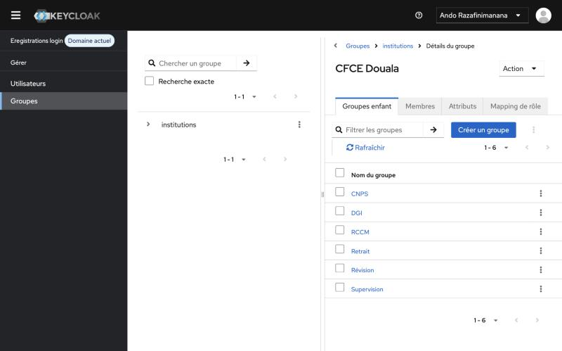
Un agent, un CFCE
Un agent ne reçoit que les dossiers de son CFCE : un agent placé dans CFCE Yaoundé / DGI ne verra jamais un dossier de Douala. Un agent qui couvre deux CFCE doit être ajouté aux deux groupes.
Le groupe APME
Il sert aux traitements automatiques de la plateforme. Les agents APME (révision, supervision, retrait) vont dans l'entité correspondante de leur CFCE, jamais dans « APME ».
Ne pas modifier les groupes
Ne créez, ne renommez et ne supprimez aucun groupe (bouton Créer un groupe, menu Action) : ils sont reliés au paramétrage de la plateforme.
Retrouver un compte en trois clics.
Ouvrir la liste des utilisateurs
Menu de gauche : Utilisateurs.
Rechercher
Tapez l'adresse email ou une partie du nom dans Chercher un utilisateur, puis Entrée.
Ouvrir la fiche
Cliquez sur le nom d'utilisateur (en bleu).
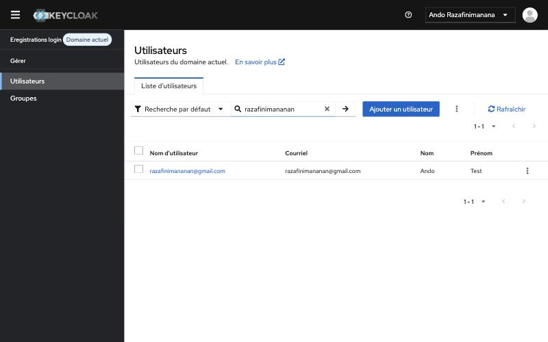
La fiche s'ouvre sur l'onglet Détails. Les onglets utiles sont Identifiants (mot de passe), Mapping de rôle (le rôle partb) et Groupes (le poste). L'interrupteur Actif en haut à droite indique si le compte peut se connecter.
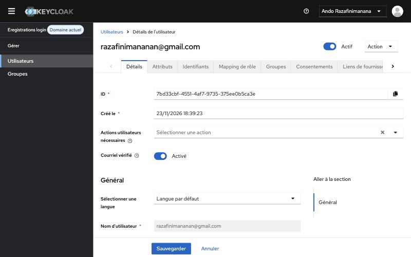
L'agent n'apparaît pas ?
Il n'a pas encore créé son compte. Demandez-lui de le faire sur services.easybusiness.cm (« Créer un compte ») avec son email professionnel, puis recommencez la recherche.
Le rôle, puis le groupe, puis on vérifie.
AAttribuer le rôle partb
Onglet Mapping de rôle
Sur la fiche de l'agent, ouvrez Mapping de rôle, cliquez sur Assigner des rôles, puis choisissez Rôles du domaine.
Cocher partb
Dans la fenêtre, cochez uniquement
partb, puis cliquez sur Assigner.
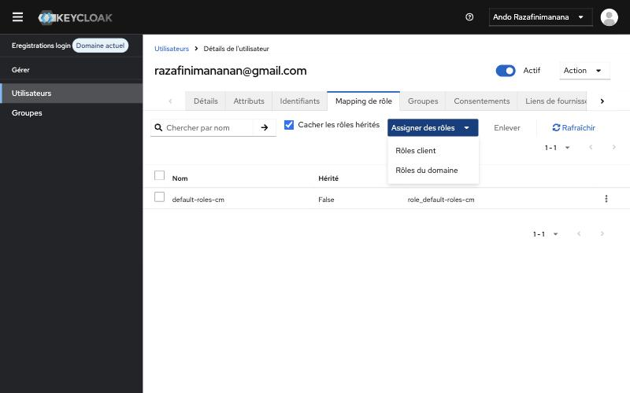
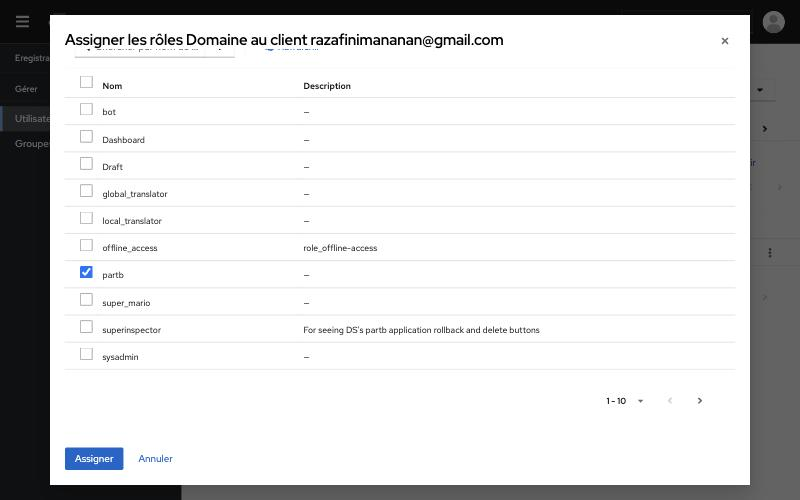
BAjouter l'agent à son entité
Onglet Groupes
Ouvrez Groupes, puis Rejoindre le groupe.
Ouvrir institutions, puis le CFCE
Cliquez sur la flèche › à droite de institutions, puis sur celle du CFCE de l'agent. Les groupes s'affichent par 10 : CFCE Yaoundé est en page 2 (flèche en haut à droite de la fenêtre).
Cocher l'entité et valider
Cochez l'entité de l'agent, puis Rejoindre. Le chemin complet s'affiche, par exemple
/institutions/CFCE Douala/DGI.
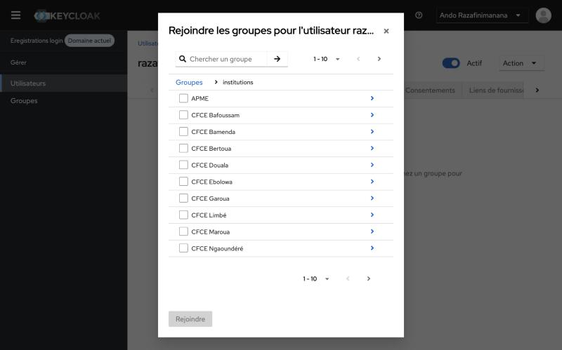
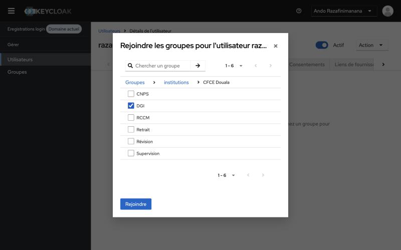
Erreur la plus fréquente
Cocher le CFCE au lieu de l'entité. L'agent est alors dans /institutions/CFCE Douala mais dans aucune entité : il ne reçoit aucun dossier. Le chemin doit toujours avoir trois niveaux.
Autre méthode : depuis le groupe
Menu Groupes → institutions → le CFCE → l'entité → onglet Membres → Ajouter un membre. Pratique pour ajouter plusieurs agents d'un coup dans la même entité.
CVérifier
- Onglet Mapping de rôle :
partbapparaît dans la liste. - Onglet Groupes : un chemin à trois niveaux, par exemple
/institutions/CFCE Ngaoundéré/Révision. - L'agent se déconnecte puis se reconnecte : les nouveaux accès ne sont pris en compte qu'à la connexion suivante.
Débloquer un utilisateur sans connaître son mot de passe.
Tout se passe dans l'onglet Identifiants de la fiche. Il propose deux boutons : Réinitialisation des identifiants, qui envoie un email à l'utilisateur, et le bouton qui fixe directement un mot de passe.
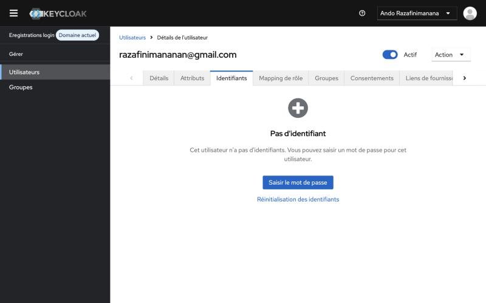
ConseilléEnvoyer un email de réinitialisation
Réinitialisation des identifiants
Onglet Identifiants → Réinitialisation des identifiants.
Choisir l'action
Dans Remettre à zéro les actions, choisissez Update Password pour un mot de passe oublié, ou Verify Email pour renvoyer l'email de vérification.
Envoyer
Cliquez sur Envoyer mail. L'utilisateur reçoit un lien et fait le reste lui-même.
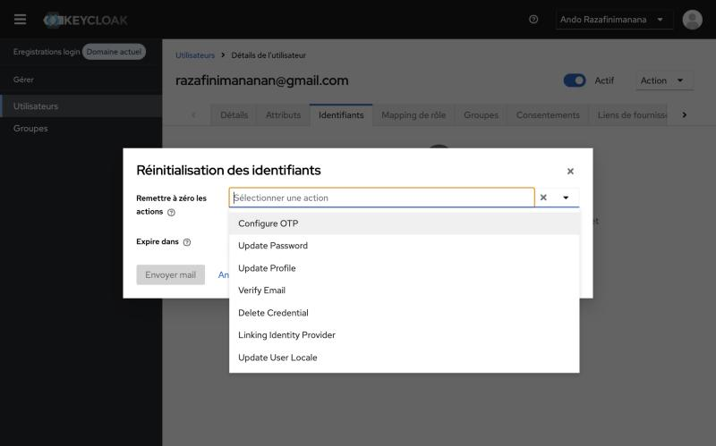
Avant d'envoyer
Vérifiez l'adresse dans Détails : une faute de frappe dans l'email est la cause la plus fréquente. Demandez aussi à l'utilisateur de regarder ses courriers indésirables.
Fixer un mot de passe provisoire
Si l'utilisateur ne reçoit pas les emails, vous pouvez fixer vous-même un mot de passe provisoire.
Ouvrir la fenêtre
Onglet Identifiants → Réinitialiser le mot de passe (le bouton s'appelle Saisir le mot de passe si le compte n'en a pas encore).
Mot de passe provisoire
Saisissez-le deux fois et laissez Temporaire sur Activé : l'utilisateur en choisira un nouveau à sa prochaine connexion. Cliquez sur Sauvegarder.
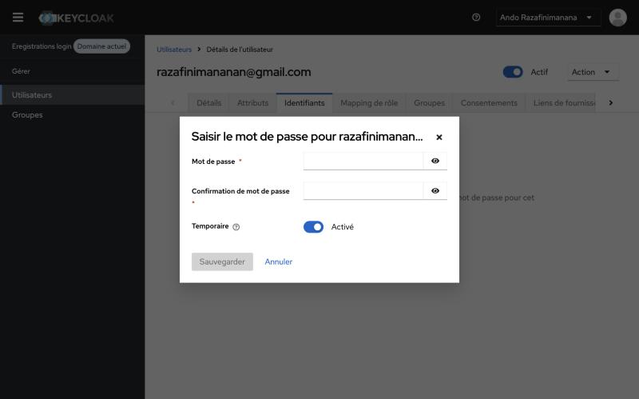
Confidentialité
Transmettez un mot de passe provisoire de vive voix, jamais par email ni par message.
Débloquer un compte
Après plusieurs mots de passe erronés, Keycloak peut verrouiller temporairement le compte. L'onglet Détails l'indique alors par un message et un interrupteur de verrouillage : désactivez-le, puis Sauvegarder. Vérifiez aussi que l'interrupteur Actif, en haut à droite, est bien activé.
Désactiver, ne jamais supprimer.
On désactive le compte d'un agent qui part : l'historique des dossiers qu'il a traités reste lisible.
Désactiver le compte
En haut à droite de la fiche, basculez l'interrupteur Actif sur désactivé et confirmez. L'agent ne peut plus se connecter.
Fermer ses sessions
Onglet Sessions (cliquez sur › au bout des onglets pour l'afficher) : déconnectez les sessions encore ouvertes.
Retirer ses groupes
Onglet Groupes : cochez ses groupes, puis quittez-les.
Le bouton Supprimer
Il efface définitivement le compte. Ne l'utilisez jamais pour un agent qui a déjà traité des dossiers. N'utilisez pas non plus Emprunter l'identité.
Changement de poste
L'agent change de CFCE ou d'entité ? Il suffit de quitter l'ancien groupe et de rejoindre le nouveau (partie 4-B). Son compte reste actif.
Contrôler entité par entité.
| Question | Où regarder |
|---|---|
| Qui travaille dans cette entité ? | Groupes → institutions → le CFCE → l'entité → onglet Membres |
| Qui travaille dans ce CFCE ? | Sur le CFCE, onglet Membres, puis cochez Inclure les utilisateurs du sous-groupe |
| Quels accès a cet agent ? | Sa fiche : onglets Groupes et Mapping de rôle |
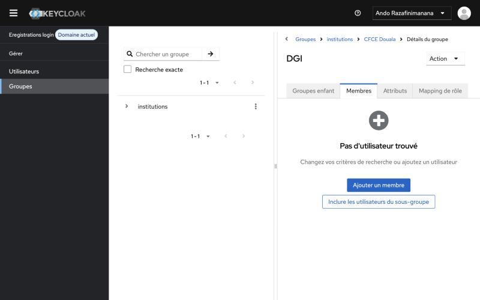
Contrôle conseillé
Une fois par mois, parcourez les membres de chaque CFCE et désactivez les comptes des agents qui ne sont plus en poste.
Ça ne marche pas ? Commencez par ici.
1L'agent se connecte mais ne voit aucun dossier
Vérifiez dans l'ordre :
- il a le rôle
partb(onglet Mapping de rôle) ; - il est dans une entité et pas seulement dans le CFCE : le chemin doit avoir trois niveaux ;
- il s'est déconnecté puis reconnecté après la modification ;
- il y a bien des dossiers en attente à son étape, dans son CFCE.
2L'agent voit les dossiers d'une autre ville
Il est dans le mauvais CFCE : retirez-le de ce groupe et ajoutez-le au bon (Rejoindre le groupe).
3Je ne trouve pas CFCE Yaoundé dans la liste
La fenêtre Rejoindre le groupe affiche 10 groupes par page. Cliquez sur la flèche › en haut à droite de la fenêtre pour voir la page 2, ou tapez « Yaoundé » dans Chercher un groupe.
4Un agent CNPS voit les étapes « Employeur » et « Salariés »
C'est normal : ces deux étapes sont rattachées à la même entité CNPS.
5Faut-il mettre les agents APME dans le groupe « APME » ?
Non. Ils vont dans l'entité Révision, Supervision ou Retrait de leur CFCE. Le groupe APME est réservé aux traitements automatiques.
6Quels rôles ne faut-il pas donner aux agents ?
Donnez seulement partb. Les autres rôles de la liste (superinspector, sysadmin, super_mario, bot, Dashboard, Draft, traduction…) sont réservés à l'équipe technique. En cas de doute, ne cochez rien et demandez.
7L'utilisateur ne reçoit aucun email
Vérifiez l'adresse dans Détails, demandez-lui de regarder ses courriers indésirables, puis renvoyez l'email (partie 5). Si rien n'arrive, fixez un mot de passe provisoire et signalez le problème à l'équipe technique.